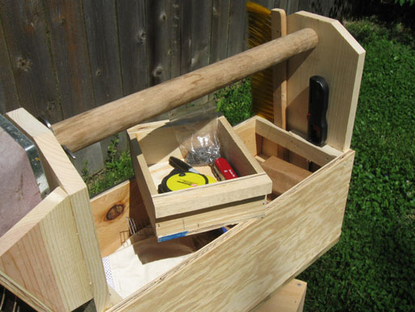
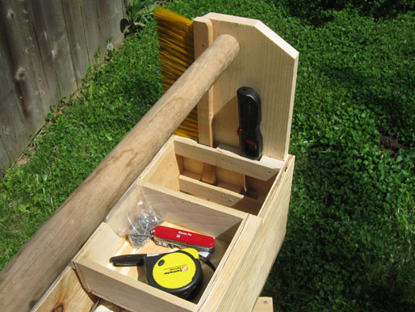
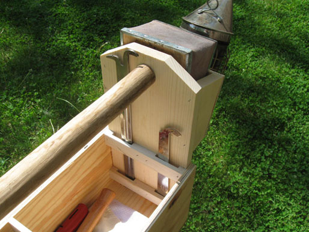
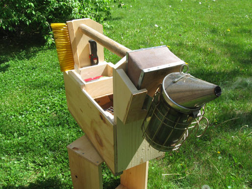
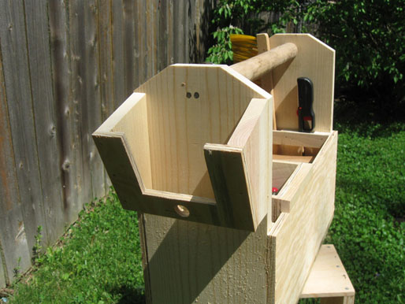
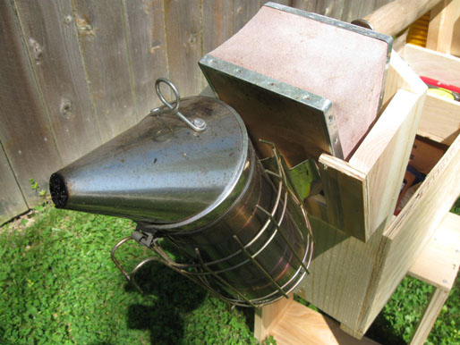
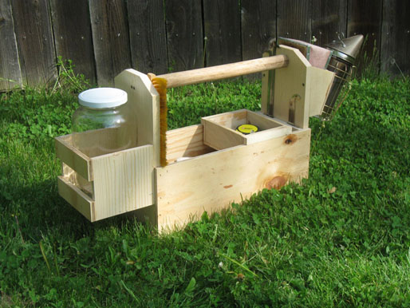
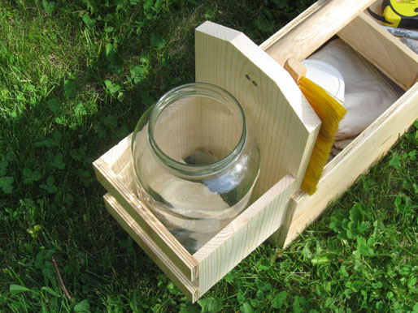

Honey Color Guide | Toolbox | Swarm Catcher | Local Pollinator Photos | Videos | Warré Hive Entrance Modifications | Contact
Toolbox
Building your own hives has its advantages. One slow morning I threw together a toolbox from some of the scrap wood lying around the workshop. That afternoon my visits to the out yards became a lot easier. No more forgotten items and fumbling for small items. Ok, a few less forgotten items and not so much fumbling for small items.
The smoker holder keeps a lit smoker off the ground. If you cut the holes right the smoker can be puffed while in the holder.
The glass jar with screw lid was an afterthought. It was suggested by a beekeeper in Germany who uses a jar to hold wax and propolis scraps. It also serves different purposes, taking samples for example. So a jar with screw lid is nice to have and it balances the weight of the smoker.
A frame holder placed on the side of the toolbox comes in handy for holding and photographing combs.










This site is licensed under a Creative Commons
Attribution-NonCommercial-ShareAlike 3.0 Unported License.
Updated 11 February 2013 | eccentric beekeeper